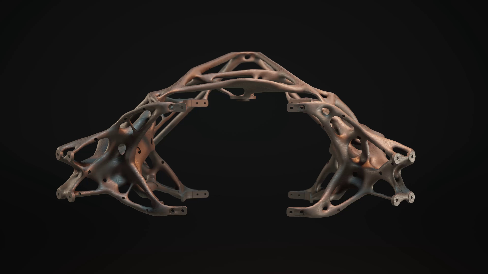
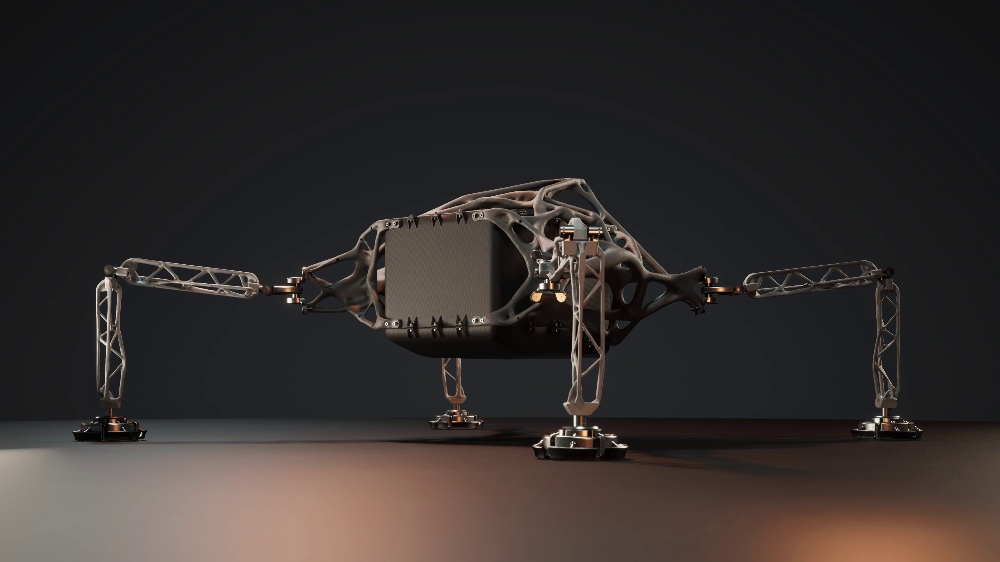

How can we search for life on distant planets? The search for life in deep space is a job for robots. Making these interplanetary robots is a job for NASA’s Jet Propulsion Lab. Their challenge is to create lighter designs that can be packed with more sensors and test equipment. media description: video depicts far off planets.
How can we search for life on distant planets?
The search for life in deep space is a job for robots. Making these interplanetary robots is a job for NASA’s Jet Propulsion Lab.
Their challenge is to create lighter designs that can be packed with more sensors and test equipment.
Weight is critical. Every 2 pounds of the lander’s weight requires nearly 1 ton of fuel and engine mass from the rocket carrying it. Prioritizing the weight of scientific cargo means that JPL must subtract weight from the lander. media description: video depicts a rocket launching into outer space
Weight is critical. Every 2 pounds of the lander’s weight requires nearly 1 ton of fuel and engine mass from the rocket carrying it.
Prioritizing the weight of scientific cargo means that JPL must subtract weight from the lander.
To create this new prototype, the team turned to AI as a design partner. After defining the requirements of the lander, engineers work with the AI to explore large sets of possible solutions. The strongest results are then selected, refined and tested. media description: video shows a rendering of the casing of the lander shrinking down to an optimal lightweight size
To create this new prototype, the team turned to AI as a design partner. After defining the requirements of the lander, engineers work with the AI to explore large sets of possible solutions. The strongest results are then selected, refined and tested.
Next, the team evaluates the structural benefits of different manufacturing techniques, including casting, milling, and 3D printing. In each case, the AI adapts the design for the method of manufacturing. The final prototype uses a mix of processes, each suited for distinct sections of the lander. media description: video depicts finished lander
Next, the team evaluates the structural benefits of different manufacturing techniques, including casting, milling, and 3D printing. In each case, the AI adapts the design for the method of manufacturing. The final prototype uses a mix of processes, each suited for distinct sections of the lander.
Each manufacturing technique offers unique advantages, allowing parts to be further optimized for weight, strength, or complexity. In each case, AI tools are able to adapt the design to make the most of how it’s fabricated. media description: video depicts three different manufacturing processes in action: milling the part, casting the parts, and 3d printing the parts
Milling
Casting
3d Printing
Each manufacturing technique offers unique advantages, allowing parts to be further optimized for weight, strength, or complexity. In each case, AI tools are able to adapt the design to make the most of how it’s fabricated.
Sand casting is used to create the lander’s chassis, the largest piece of the design. media description: video depicts manufacturers pouring molten metal into the cast
Sand casting is used to create the lander’s chassis, the largest piece of the design.
Casting is an ideal way to create this large, hollow frame. The skeleton-like appearance is a result of AI optimization. Borrowing from the process nature takes to guide a bone’s shape over generations, the AI repeatedly calculates and tests its design in a process of trial and error. It leaves behind only what’s essential for the requirements of the frame. media description: interactive depicts a 3d model of the final form that is rotatable
 Slide to expand model
Casting is an ideal way to create this large, hollow frame.
The skeleton-like appearance is a result of AI optimization. Borrowing from the process nature takes to guide a bone’s shape over generations, the AI repeatedly calculates and tests its design in a process of trial and error.
It leaves behind only what’s essential for the requirements of the frame.
For maximum strength, the lander’s legs are carved from solid blocks of aluminum using a computer controlled mill. media description: video shows how the legs are carved out of a solid block of aluminum with cnc technology
For maximum strength, the lander’s legs are carved from solid blocks of aluminum using a computer controlled mill.
The AI calculates the most efficient route for the mill to take, as well as what size and shape of bit should be used for each pass. media description: video depicts a 3d animation showing how the leg part gets milled out of the solid block
The AI calculates the most efficient route for the mill to take, as well as what size and shape of bit should be used for each pass.
The most intricate, internal elements of the lander’s design are made with an industrial 3D printer. Using metal powder, the process builds the design up layer by layer, selectively fusing each layer to the last. media description: video depicts the 3d printing process
The most intricate, internal elements of the lander’s design are made with an industrial 3D printer. Using metal powder, the process builds the design up layer by layer, selectively fusing each layer to the last.
Fully assembled, this interplanetary lander achieved a weight reduction of 35% compared to JPL’s reference design. Because the body is custom fit to the payload, no space is wasted. This leaves more room for sensors and scientific instruments. Precious cargo that will act as our eyes and ears on distant planets. media description: interactive animation depicts the lander in its final form and allows the user to expand the model
 Slide to expand model
Fully assembled, this interplanetary lander achieved a weight reduction of 35% compared to JPL’s reference design.
Because the body is custom fit to the payload, no space is wasted. This leaves more room for sensors and scientific instruments. Precious cargo that will act as our eyes and ears on distant planets.
It’s a breakthrough made possible by partnering with AI through every stage of the process. Working together, we can open new approaches to the search for life beyond our planet. media description: video shows designers assembling the final lander